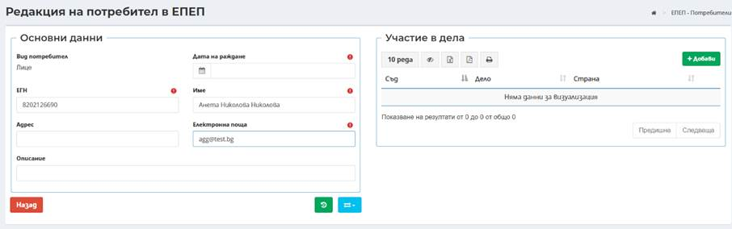
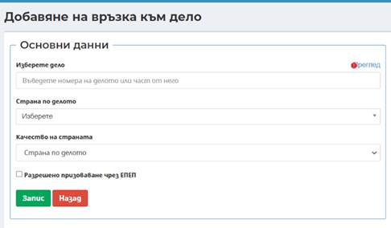
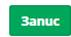

9.1.1 Интеграции
В меню Интеграции става преглед и добавяне на Потребители в ЕПЕП и предоставяне на достъп до конкретни съдебни дела.
9.1.1.1 Интеграции/ЕПЕП потребители
В екрана на меню Интеграции/ЕПЕП потребители се визуализират всички потребители регистрирани в ЕПЕП .
ВАЖНО: Първичният регистър на потребителите е ЕПЕП. След оптимизиране на ЕПЕП и въвеждане на нови функционалности, през ЕИСС няма да може да се създават потребителски профили, а само да се управляват достъпите до дела.
Деактивирана е функционалността за добавяне - бутон Добави. За да се даде достъп до дело, трябва да се изтегли наличен в ЕПЕП потребител и да му се добави дело. Изключително важно е да се избира коректно дали е в качество на страна или адвокат.
Конкретен пример за адвокат:
Профилът на адвоката в ЕПЕП потребители е по адвокатски номер (не се вижда ЕГН). Адвокатът има лично дело и по делото е въведен с ЕГН. В този случай, достъп по делото трябва да се даде на профила с адвокатски номер като страна!
За стари предоставени достъпи, ако е необходимо по заявка от потребител, може да се извърши промяна на качеството.
Профили на юридически лица.
Лицата по чл. 50 и чл. 52 от ГПК ще могат да имат свои мастър (главни) профили в ЕПЕП. По дела, по които тези лица са страни, в делото се добавят по ЕИК и връчванията на призовки/съобщенич/уведомления се правят към юридическото лице (по ЕИК).
За добавяне на страна/адвокат към дело в края на реда, срещу конкретното лице/адвокат се избира бутон Редакция.
Отваря се диалогов прозорец със следната информация за въвеждане:
- Дата на раждане, ЕГН и име – са задължителни полета за лица;
- Адвокат – при въвеждане на минимум три последователни символа, системата автоматично търси и предлага за избор списък от адвокати;
- Адрес – въвежда се адрес на лицето/адвоката. Полето не е със задължителен характер;
- Електронна поща – Полето е задължително;
- Описание – при необходимост може да се въведе допълнителна информация.
-

В дясната част на екрана се визуализира секция Участия в дела. В нея се визуализират делата, до които на лицето/адвокатът се предоставя достъп. Посредством бутон се добавя връзка на лицето/адвоката към съответното дело.

- Поле Изберете дело – въвежда се конкретното дело, по което се иска достъп;
- Страна по делото – посредством падащо меню се избира конкретното лице, което е заявило достъп до делото;
- Качество на страната – избира се дали е страна по дело или адвокат;
- Чекбокс Разрешеное призоваване чрез ЕПЕП – в случай, че е заявено от лицето/адвоката се маркира.
-
С бутон Запис 
Посредством бутон
 има възможност за корекция на данните на лице/адвокат както и на
достъпа им до дела. Екраните за редакция съдържат аналогични полета като тези
при въвеждане.
има възможност за корекция на данните на лице/адвокат както и на
достъпа им до дела. Екраните за редакция съдържат аналогични полета като тези
при въвеждане.